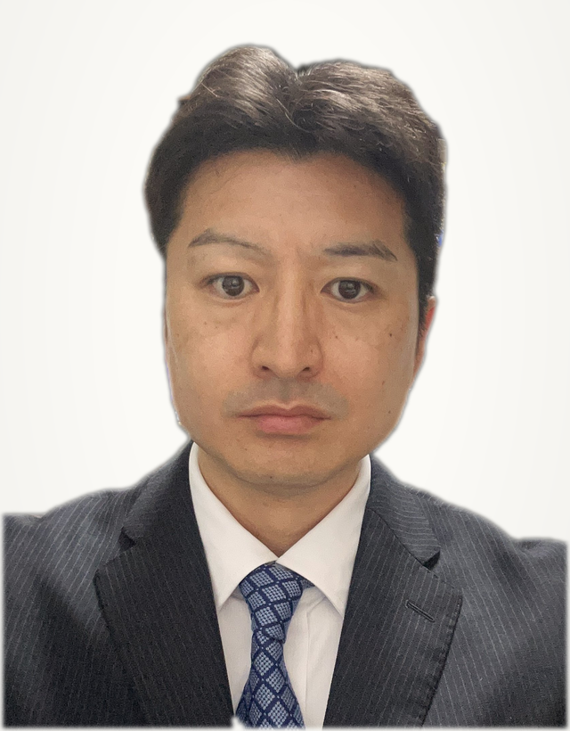

放課後等デイサービス、児童発達支援、就労継続支援A型・B型——。
「そもそも何が必要？」「どんな順番で進めるの？」という段階から、
開業までの要件・手順・お金の話を、図解とよくある質問でやさしく整理しました。
放課後等デイサービス開業ガイド（詳細版）
新規開設に必要な準備と指定申請までの流れを、ゼロからさらに詳しく整理した完全ロードマップです。
まずは、これから始めようとしている事業が、どの制度のどこに位置づくのかを整理しましょう。
障害のある方を支える事業は、大きく 2つの法律 に分かれています。
子ども向けの通所支援は「児童福祉法」、大人向けの福祉サービスは「障害者総合支援法」が根拠です。
どちらも、事業を行うには 都道府県・市町村から「指定」を受ける必要があります。
障害のある子どもが、通いながら発達の支援を受けるサービスです。
主なサービス
大人が「働く」「暮らす」「訓練を受ける」ことを支えるサービスです。
就労系（働くことの支援）
その他（介護・訓練・住まい 等）
このページで特に詳しく解説：放課後等デイサービス 就労継続支援A型・B型
どのサービスでも共通して、この4つを満たすことで自治体の「指定」を受けられます。
個人では開業できません。株式会社・合同会社・NPO法人・社会福祉法人などの法人が必要。定款の事業目的に該当事業の記載も必須です。
管理者・サービス管理責任者（児発管）・支援員など、職種ごとに必要な人数と資格が決められています。
必要な部屋・広さ、消防・建築のルールを満たす物件が必要。契約前の自治体相談が重要です。
運営規程、個別支援計画、記録の整備など、開業後に守るべき運営上のルールを整えます。
なかでも最初の壁になりやすいのが 「人（サービス管理責任者・児童発達支援管理責任者）」の確保 と 「物件」の選定 です。
いずれも要件を満たすまでに時間がかかるため、早めの着手が成功の分かれ目になります。
補足：法人にはどんな種類がある？
「株式会社・合同会社」のような営利法人だけでなく、「NPO法人」や「社会福祉法人」でも開業できます。
それぞれ設立のしやすさ・費用・社会的な性格・税制などが異なります。
| 法人の種類 | 設立のしやすさ・特徴 | こんな方に向いています |
|---|---|---|
| 株式会社／合同会社 営利法人 |
営利（配当可） 比較的かんたん・短期間で設立できます。合同会社は株式会社より設立費用を抑えやすいのが特徴。意思決定も自由度が高めです。 |
スピード重視で新規参入したい方。まず小さく始めたい方に選ばれることが多い形態です。 |
| 一般社団法人 非営利法人 |
非営利 剰余金を構成員に分配しない「非営利」の形。設立は比較的しやすく、営利法人と社会福祉法人の中間的な選択肢です。 |
「非営利」の形をとりたいが、社会福祉法人ほどの負担は避けたいという方。 |
| NPO法人 特定非営利活動法人 |
非営利 設立に所轄庁の認証が必要で、数か月かかります。利益の分配はできませんが、社会的信用や地域の理解を得やすい面があります。 |
地域に根ざした非営利の運営を大切にしたい方。設立に一定の手間と時間をかけられる方。 |
| 社会福祉法人 公益性の高い法人 |
非営利・公益 資産要件やガバナンス（理事会・評議員会等）など設立の認可ハードルが高い反面、高い社会的信用と税制上の優遇があります。 |
大規模・本格的に福祉事業を担う方向け。新規の小規模開業では選ばれにくい傾向があります。 |
思い立ってから開業まで、一般的には半年〜1年ほど。全体の道のりを見ておきましょう。
どのサービスを、どの地域で、どんな規模で行うかを固めます。地域のニーズや競合状況もこの段階で確認します。
法人がなければ設立します。すでに法人がある場合も、定款の事業目的に該当事業が入っているかを確認し、必要なら変更登記を行います。
収支の見通しと、開業資金・当面の運転資金を計画します。金融機関からの融資を検討する場合はここが要になります。
設備基準・用途地域・消防・建築のルールを満たすかを、契約前に自治体へ相談します。多くの自治体で事前協議が必要です。
サービス管理責任者・児童発達支援管理責任者は資格要件を満たす人材が少なく、採用に時間がかかります。最優先で動きましょう。
書類一式を整えて申請します。多くの自治体で「開業希望月の前月●日まで」といった締切があり、指定は原則毎月1日付です。
指定通知書を受け取ったら、いよいよサービス開始。開業後は加算の届出や運営指導への備えなど、運営フェーズに入ります。
全体でおおよそ 半年〜1年。人材確保と物件探しに最も時間がかかります。
開業でつまずきやすいのが資金繰り。特に「報酬が入ってくるまでのタイムラグ」に注意が必要です。
4月中に利用者へサービスを提供します。この時点では、まだ報酬は入ってきません。
翌月に、国民健康保険団体連合会（国保連）へ報酬を請求します。
さらに翌月末ごろに入金。つまり約2か月遅れで売上が入ります。
売上（報酬）が入るのは、サービス提供から 約2か月後。
その間も家賃・人件費は毎月発生するため、数か月分の運転資金を手元に用意しておくことが、安定した滑り出しの鍵になります。
問い合わせの多い3つのサービスについて、特徴・基準・よくあるトピックをまとめました。
就学している障害のある子どもが、放課後や長期休暇に通い、遊びや学び・生活能力の向上のための支援を受ける場です。いわば「障害のある子どものための学童＋療育」のようなイメージ。利用には、自治体が発行する「通所受給者証」が必要です。
どちらも「働くことを支える」サービス。最大の違いは「雇用契約を結ぶかどうか」です。
| 項目 | 就労継続支援 A型 | 就労継続支援 B型 |
|---|---|---|
| 雇用契約 | 結ぶ（労働者として働く） | 結ばない |
| 支払われるお金 | 賃金（最低賃金以上を保障） | 工賃（成果に応じた報酬。最低賃金の保障なし） |
| 主な対象 | 原則18〜65歳未満で、支援があれば継続的に働ける方 | 年齢制限なし。体調等で雇用契約による就労が難しい方 |
| 定員 | 原則 10名以上 | 原則 20名以上 |
| 必須の人員 | 管理者／サービス管理責任者（サビ管）／職業指導員・生活支援員（合わせて利用者10名に1名以上、各1名以上・うち1名以上常勤） | |
障害のある方と雇用契約を結び、最低賃金以上の賃金を支払いながら働く場を提供するサービスです。「支援は必要だけれど、契約を結んで安定的に働きたい」という方が対象。事業者は、利用者に取り組んでもらう仕事（生産活動）を用意する必要があります。
雇用契約を結ばずに、自分のペースで生産活動に取り組み、成果に応じた「工賃」を受け取るサービスです。年齢や体調の面で雇用契約による就労が難しい方の、居場所と社会参加の場になります。A型より始めやすい一方、定員が大きく、工賃を生む活動の工夫が求められます。
サービス種別を問わず、これから始める方から多く寄せられる疑問をまとめました。
ここでご紹介したのは、あくまで一般的な概要です。実際の要件は、選ぶサービス・物件・地域・タイミングによって変わり、指定申請の書類も多岐にわたります。
風のテラス行政書士事務所は、名古屋市・愛知県を中心に、指定申請などの手続きサポートや開業後の運営支援を行っています。書類の準備や申請手続きにご不安がある場合には、当事務所までお気軽にご相談ください（初回のご相談は無料です）。
このページを監修している、代表行政書士のプロフィールです。

「障害福祉の事業を始めたいけれど、制度が難しくて何から手をつければいいか分からない」——そんな声によくお応えしています。
複雑な手続きをかみ砕いてご説明し、事業者様が本来の支援に専念できるようサポートいたします。「困ったときに、いつでも寄り添える身近な存在でありたい」——そんな事務所を目指しています。
| 事務所名 | 風のテラス行政書士事務所 |
|---|---|
| 代表行政書士 | 鈴木 達也 |
| 所属 | 日本行政書士会連合会 第23191988号 |
| 所在地 | 〒456-0022 愛知県名古屋市熱田区横田二丁目1-32-402 |
| 電話番号 | 052-750-5612 |
| メールアドレス | k-office@kazenoterrace.com |
| 営業時間 | 平日 10:00 〜 18:00（土日祝日のご相談は要予約） |
| 対応エリア | 名古屋市・愛知県全域 |
| 主な取扱業務 | 障害福祉サービス事業全般（開業サポート・指定申請・運営支援） |
名古屋市全域および愛知県内全域（豊橋市、岡崎市、一宮市、瀬戸市、半田市、春日井市、豊川市、津島市、碧南市、刈谷市、豊田市、安城市、西尾市、蒲郡市、犬山市、常滑市、江南市、小牧市、稲沢市、新城市、東海市、大府市、知多市、知立市、尾張旭市、高浜市、岩倉市、豊明市、日進市、田原市、愛西市、清須市、北名古屋市、弥富市、みよし市、あま市、長久手市 ほか）
指定申請などの手続きにご不安がある場合は、名古屋市・愛知県対応の当事務所までお気軽にご相談ください。お電話・メールで承ります。